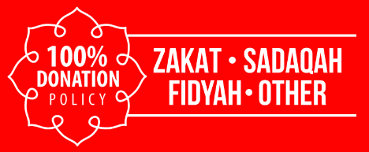
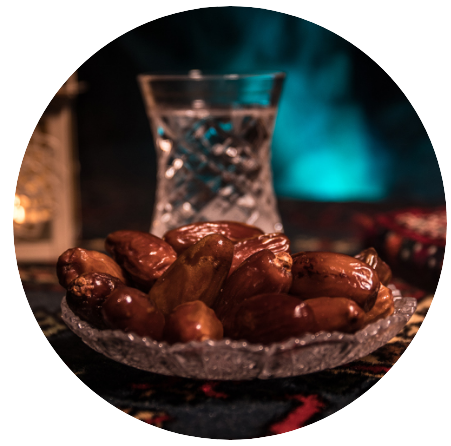
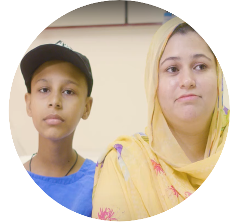
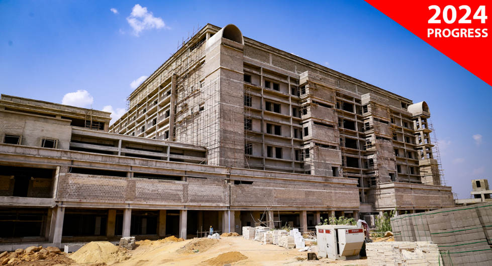
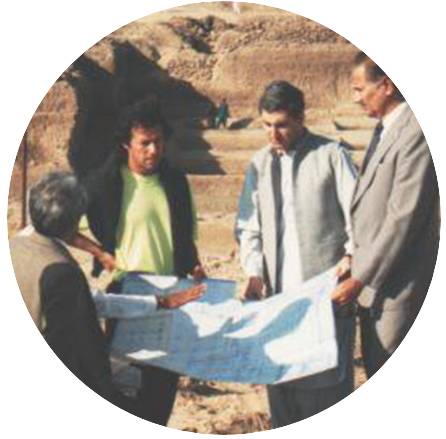

Each Year,our Founder Imran Khan,coveys his message here,but due to his unavailablity,I'm writting to update you about our projects.The founder,
neverthless,has conveyed his gratitude for your unstinting support towards fighting cancer in Pakistan.
On 29th December 2023,we completed twenty-nine years of service,remaining steadfast on our founder's vision to provide quality cancer treatment,irrespective of
a patient's wealth-with over 75% of our patients receiving free treatment.
In Lahore,we installed a new multi million pound linear accelerator & opened a new 12-bed admission holding bay to improve patient flow.In Peshawar,we
created plans to expand our surgical oncology services for breast cancer,open two new operating rooms,& expand our diagnostic capabilities in pulmonology.In
Karachi,we opened a Walk-in Clinic for screening & triaging & began finishing works for our third & largest hospital.
Even in these challenging economics times,we know you have always supported those who are less fortunate.As such,we request your generous donations &
zakat to help continue giving hope to people with cancer.
With warmest personal regards,
Dr Faisal Sultan
CEO,Shaukat Khanum Memorial Cancer Hospital


IMRAN KHAN CANCER APPEAL
"The Messenger of Allah(P.B.U.H)was the most generous of people & he was even more generous in Ramadan."(Bukhari)
75% of the patient who come to our hospital are too poor to meet their basic daily needs,which is why,with your help every Ramadan,we provide them with free
treatment throughout the year.
By working toghether in 2023,we increased our patient admissions by 4.3%.We carried out 6.7% more pathology tests & 9.5% more imaging studies.We increased
our outpatient visit by 10%.and we helped our patients brave 80,452 radiotherapy sessions,79,741 surgical procedures:& over 50 bone marrow transplant.
Today,the battle to save lives at our hospitals in Lahore,Peshawar & at our new site in Karachi continues.
Our Founder has dedicated his life to improving the welfare or ordinary Pakistanis.He is unable to make an appeal for Shaukat Khanum Hospitals this year,
but in this absence,we hope you will continue supporting our patients with your Zakat & Sadaqah & show that we still stnad toghether in the fight against cancer.
PAY YOUR ZAKAT WITH YOUR CONFIDENCE
"[...] then teach them that Allah has made it obligatory for them to pay the Zakat from their property & it is to be taken from the wealthy among them & given to the poor."(Bukhari)
For 29 years,we've born the trust & confidence of donors who require absolute transparency & adhernce to Islamic guaidance concerning their obligation to Zakat.
Find out more about how we ensoure your Zakat reaches only the most deserving patients.Download our free
to get answers to your frequently asked questions about Zakat & it's condition in Islam.

DID YOU KNOW...


Decades before becoming a philanthropist,our founder IMRAN KHAN was a celebrated cricket icon who achived a historic victory when he led the Pakistan team to
with the 1992 Cricket World Cup.He donated his prize money,as well as additional funds,to establish Shaukat Khanum Memorial Cancer Hospital in Lahore 1994.
This was the first cancer hospital in Pakistan & the start of Imran's long-standing commitment to charity.
Oral cancer is one of the highest in the world in Karachi,and cancer of the gastrointestinal tract is also increasing in the population.Our new hospital will offer
specialist care & treatment to those living with these & other cancers in the region.
Karachi is the capital of the sindh province of Pakistan's largest.most populated city.Poverty is the major issue in this area with over 40% of the population living on
less then 80 pence a day & 75% of those living in rural neighbourhoods nearby facing smilar levels of deprrivation.In these deperate time,crime is rampant &
human life has little value;it is not uncommon for parents to abandon their children & for the sick to have little hope for survival.Our new hospital with offer free,
high-quality treatment to the poorest cancer patients & bring renewed hope to those in deperate need.
We remain grateful for your ongoing support in helping us reach even more construction milestones this years.
GIVE SADAQAH JARIYAH TO OUR KARACHI HOSPITAL
"When a man dies,his good deeds come to an end expect for three things:Sadaqah Jariyah [ceasless charity];a knowledge which[he has passed on &]is
beneficial;or a virtous descendant who prays for him."(Muslim)
Giving Sadaqah jariyah to a hospital that provides healing is an excellent way to reap the benefits of our charity in his life & in the hereafter.
Many of us can't afford to give much this Ramadan.That's why we're coming toghether to give what we can towards a big cause with perpetual blessings.
Let's unite with millions of others & became part of something special today.
Toghether,we can changes lives.Make a donation today.
CONTACT US
Imran Khan Cancer Appeal
PO Box 786,66 Little Horton Lane
Bradford,BD5 OYE
BANK TRANSFERS:Barclays Bank PLC
A/C Name:Imran Khan Cancer Appeal
Sort Code:20-37-83
A/C Number:40550256
SWIFT BIC:BUKBGB22
IBAN:GB03 BUKB 2037 8340 5502 56
01274 424 444
info@ikca.org.uk
SOCIAL FEED
NEWSLETTER SINGUP
USEFUL LINKS
Cancer Information
Zakat Calculator
Latest Appeals
Success Stories
Latest News
Copyright Imran Khan Cancer Appeal,Pak
Register Charity Number:1000580